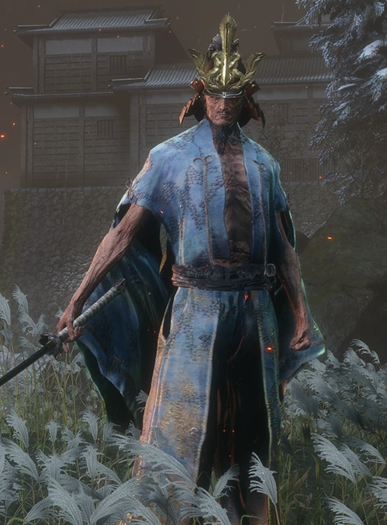

Isshin, el Maestro Espadachín
Considerado uno de los guerreros más formidables de Ashina, Isshin regresa en su plenitud para enfrentarse a Sekiro. Este combate representa el enfrentamiento final de las rutas principales que no siguen el desenlace Shura [34].
Su dominio de la espada, la lanza y las técnicas de combate lo convierten en un adversario extremadamente exigente. Para vencerlo es necesario dominar la desviación de ataques, mantener la presión y aprovechar cada oportunidad para reducir su postura [34].
